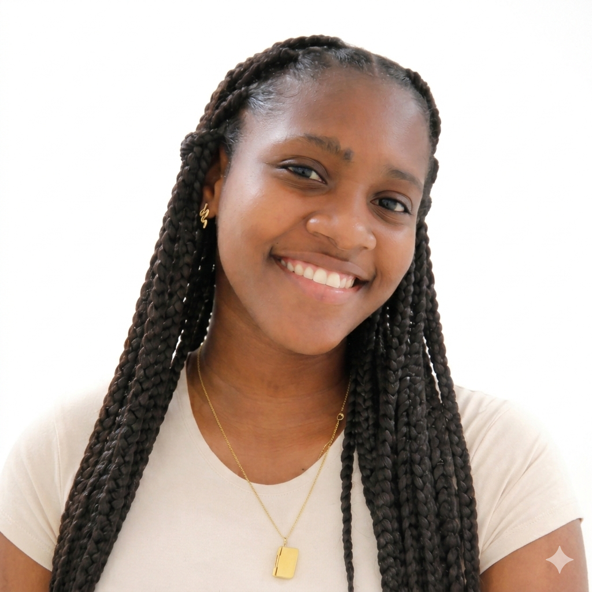

Karol Caicedo
Estudiante de Ingeniería de Sistemas
Acerca de mí
Soy una persona alegre, carismática, responsable, puntual, proactiva y organizada. Estudiante de ingeniería de sistemas 8vo semestre. Manejo básico de software como: Día, Visual Paradigm, Wampserver y Workbench MySQL. En mis tiempos libres me gusta leer libros de autoayuda y crecimiento personal, ver series Police Procedural y escuchar música.
Habilidades
- Trabajo en Equipo
- Comunicación asertiva
- Aprendizaje autodidacta
- Resolución de problemas
- Liderazgo
- Adaptabilidad
Información de Contacto
- Email: karcaimoreno@outlook.com
- Teléfono:
 +573148591044
+573148591044 - Perfil de Github: Karol-Caicedo
- Residencia: Buenaventura, Colombia.
Formación Académica
Certificados cursos cortos
- IA aplicada a la ciencia de datos: uso de la IA en la construccion de visualización de datos.
- Aprende a aprender: técnicas para tu autodesarrollo.
- Python para Data Science: primeros pasos.
- Pandas E/S: trabajando con diferentes formatos de archivo.
- Pandas: Trasnformación y manipulación de datos.
- Aprende a aprender: técnicas para tu autodesarrollo.
- Desarrollo de carrera: demanda del mercado.
Científico de Datos
En formación como Científica de Datos con la plataforma Alura LATAM, especializada en el uso de Python y análisis de datos en entornos Google Colab.
Carrea Profesional
Actualmente en formación profesional como ingeniera de sistemas en la Universidad del Pacífico de Buenvaventura.
Diploma o Acta de grado
Egresada de la institución educativa liceo del pacífico con el título de Bachiller Técnico Comercial.